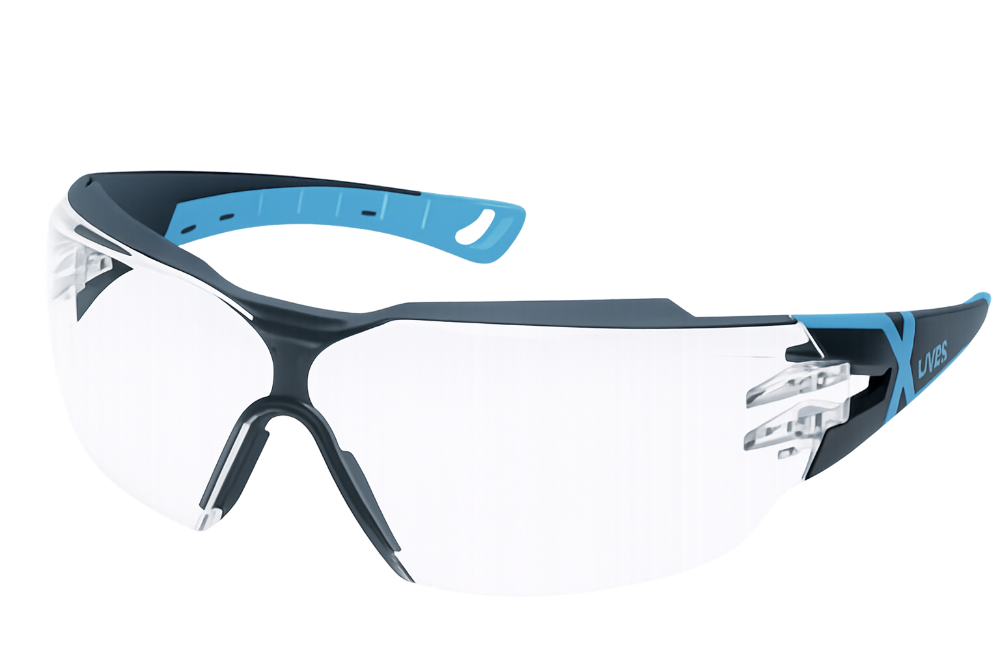

Protecting miners’ eyes from dust, debris, and chemical hazards
Тоос, хог хаягдал, химийн бодисоос уурхайчдын нүдийг хамгаална

Safety glasses are vital for underground miners, shielding their eyes from flying debris, dust, chemical splashes, and intense light sources.
They are designed with impact-resistant lenses, anti-fog coatings, and side shields to ensure clear vision and maximum protection.
Далд уурхайн ажилчдын хувьд аюулгүйн нүдний шил нь салхиар хийсэж ирэх хог хаягдал, тоос, химийн бодис цацагдах, хүчтэй гэрлийн эх үүсвэр зэргээс нүд хамгаалах чухал хэрэгсэл юм.
Аюулгүйн шил нь цохилтод тэсвэртэй линз, манан үүсэхээс хамгаалсан бүрхүүл, хажуугийн хамгаалалттайгаар бүтээгддэг.
Protects eyes from flying debris and particles.
Нүдийг агаарт дэгдсэн хог хаягдал, тоосноос хамгаална.
Keeps vision clear in humid underground conditions.
Чийглэг орчинд тод харах боломж бүрдүүлнэ.
Provides extra protection against dust and splashes.
Тоос, химийн бодис цацалтаас хамгаалах нэмэлт хамгаалалт.
Shields eyes from harmful UV rays and bright lights.
Нүдийг хортой UV туяа, хурц гэрлээс хамгаална.
1. What feature prevents fogging in underground conditions?
Side shields
Anti-fog coating
UV protection
2. Why are impact-resistant lenses important?
They protect against flying debris
They reduce glare
They improve style
3. What do side shields provide?
Extra protection against dust and splashes
UV protection
Anti-fogging